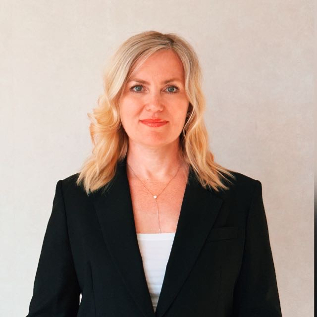

Учёт и первичные документы
Ведение учёта в 1С, первичная документация, банк, касса, ЭДО и текущие хозяйственные операции.
ИП · ООО · ГРУППЫ КОМПАНИЙ
Беру на себя бухгалтерию, налоги, отчётность, зарплату, кадровые вопросы и взаимодействие с ФНС.
Вы занимаетесь бизнесом. Я слежу за тем, чтобы бухгалтерские и налоговые вопросы решались вовремя.
Обсудить мой бизнес
01 / ПОДХОД
Если вам приходится самостоятельно следить за налогами, контролировать бухгалтера, разбираться с ЕНС, вспоминать о сроках или решать, что отвечать налоговой — часть бухгалтерской работы фактически остаётся на вас.
Я работаю иначе. Погружаюсь в бизнес клиента, контролирую бухгалтерские и налоговые вопросы и заранее сообщаю о том, что требует внимания.
Собственник не должен контролировать бухгалтера, чтобы бухгалтерия была под контролем.
02 / ЧТО Я БЕРУ НА СЕБЯ
Ведение учёта в 1С, первичная документация, банк, касса, ЭДО и текущие хозяйственные операции.
Расчёт налогов и взносов, НДС, декларации и обязательная отчётность. Контроль сроков и предстоящих платежей.
Расчёт заработной платы, НДФЛ и страховых взносов, кадровое сопровождение сотрудников.
Контроль единого налогового счёта и налоговых обязательств, чтобы задолженность не становилась неожиданностью.
Разбираю требования налоговой, готовлю ответы и при необходимости сама взаимодействую с инспекцией.
Обсуждаем операцию или ситуацию до принятия решения, если она может иметь бухгалтерские или налоговые последствия.
03 / ГЛАВНОЕ ОТЛИЧИЕ
Бухгалтерия не должна быть чёрным ящиком, в который собственник заглядывает только перед налоговым платежом или после требования ФНС.
Моя задача — видеть ситуацию заранее.
Если от вас требуется решение — вы узнаёте об этом вовремя.
04 / ПОНЯТНЫЙ ОТЧЁТ
В рамках комплексного сопровождения я формирую для руководителя понятный отчёт о состоянии налогов и расчётов с бюджетом.
Информация, необходимая собственнику для контроля бизнеса, — в одном отчёте.
Решения, документы и вопросы, которые важно обсудить.
05 / ВЗАИМОДЕЙСТВИЕ С ФНС
Получаю и анализирую требования, проверяю данные учёта, готовлю необходимые пояснения и ответы. Когда требуется, взаимодействую с инспекцией напрямую.
Вы понимаете, что происходит, но вам не приходится самостоятельно переводить язык налоговой на человеческий и выяснять, что от вас хотят.
06 / КОГДА КО МНЕ ОБРАЩАЮТСЯ
01Бизнес вырос, и бухгалтерия стала занимать слишком много времени.
02Бухгалтер сдаёт отчётность, а остальные вопросы контролируете вы.
03Появились сотрудники, НДС, несколько ИП или ООО.
04Нужно сменить бухгалтера и принять учёт без хаоса.
05Регулярно возникают вопросы с ФНС и ЕНС.
06Нет уверенности в расчёте налогов и предстоящих обязательствах.
Или вы просто хотите передать бухгалтерскую функцию специалисту и заниматься своим бизнесом.
07 / ОБО МНЕ
Я бухгалтер и сопровождаю малый бизнес — ИП, ООО и компании одного собственника.
Работаю непосредственно с руководителями и лично погружаюсь в бухгалтерию каждого клиента.
Для меня хороший бухгалтер — это специалист, который знает бизнес клиента, контролирует его бухгалтерскую и налоговую сторону и предупреждает о вопросах до того, как они превращаются в проблемы.
Поэтому я сознательно не работаю в формате массового бухгалтерского сервиса.
Вы знаете своего бухгалтера.
А ваш бухгалтер знает ваш бизнес.
08 / БУХГАЛТЕР + ЮРИСТЫ
В работе бизнеса бухгалтерские вопросы часто пересекаются с юридическими. В таких ситуациях я могу подключить проверенного профильного юриста.
Вам не нужно самостоятельно искать специалиста и объяснять ему ситуацию с нуля — бухгалтер и юрист могут работать над вопросом совместно.
Юридические услуги рассчитываются отдельно.09 / ПЕРВЫЕ ШАГИ
Вы рассказываете о бизнесе. Я задаю вопросы о налогообложении, сотрудниках, документообороте и текущей бухгалтерии.
Смотрим состояние учёта и определяем, есть ли вопросы, которые необходимо исправить.
Оцениваю, сколько работы действительно требует ваш бизнес, и называю стоимость сопровождения.
Получаю необходимые базы, доступы и документы и начинаю работу.
10 / СТОИМОСТЬ
Два ООО могут отличаться по объёму бухгалтерской работы в несколько раз. Поэтому цена зависит не только от организационной формы.
После короткого знакомства я оценю объём работы и назову стоимость.
Рассчитать стоимость сопровождения11 / ДАВАЙТЕ ПОЗНАКОМИМСЯ
Расскажите несколько слов о компании. Я оценю объём бухгалтерии и скажу, смогу ли взять ваш бизнес на сопровождение и сколько это будет стоить.